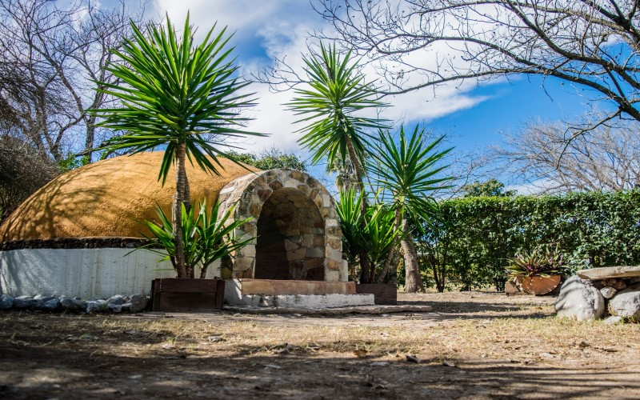
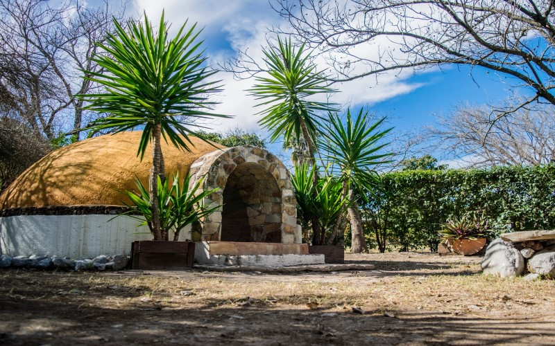

Atracciones Destacadas en Morelos
Morelos ofrece una gran variedad de atracciones para todos los gustos: zonas arqueológicas, parques naturales, balnearios, pueblos mágicos, cascadas, senderos ecológicos y actividades culturales. ¡Explora y vive la experiencia!
 

Tepoztlán
Pueblo mágico rodeado de montañas, ideal para senderismo, temazcal y visitar el Tepozteco.
Las Estacas
Parque natural con río cristalino donde puedes nadar, bucear, acampar o hacer kayak.
Zona Arqueológica Xochicalco
Impresionante sitio prehispánico declarado Patrimonio de la Humanidad por la UNESCO.
Paracaidismo en Morelos
Vive la adrenalina de saltar en paracaídas con vistas espectaculares de todo el estado.
Salto de San Antón
Una cascada impresionante dentro de Cuernavaca, rodeada de naturaleza exuberante.
Laguna de Coatetelco
Pasea en lancha y disfruta de la gastronomía típica a orillas de una laguna ancestral.
Temazcales
Rituales ancestrales para renovar cuerpo y espíritu en el corazón del misticismo.
Balneario Santa Isabel
Disfruta de albercas de agua termal en un ambiente familiar y relajado.
Jardines de México
Los jardines temáticos más grandes del mundo, llenos de belleza natural y arte paisajístico.
Museo Casa Zapata
Sumérgete en la historia de Emiliano Zapata desde el lugar donde nació.
Zona arqueológica Chalcatzingo
Explora petrograbados olmecas y descubre uno de los secretos mejor guardados de Morelos.